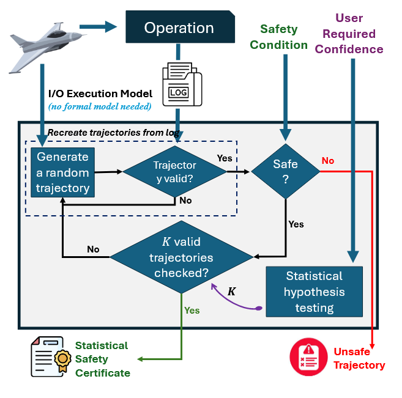
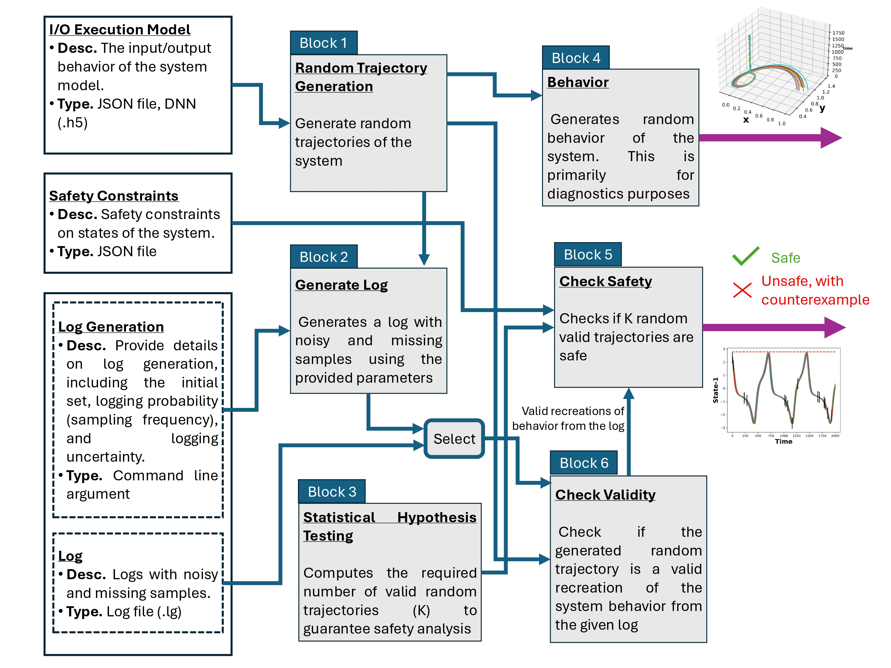
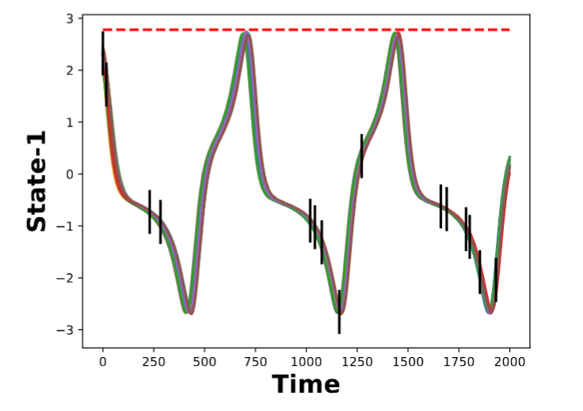
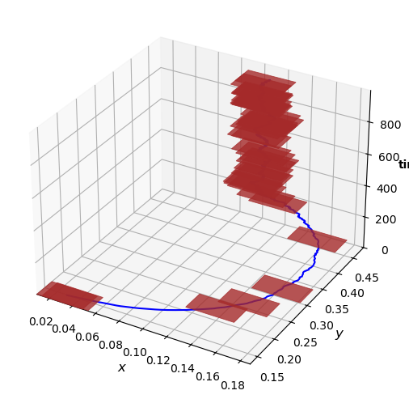
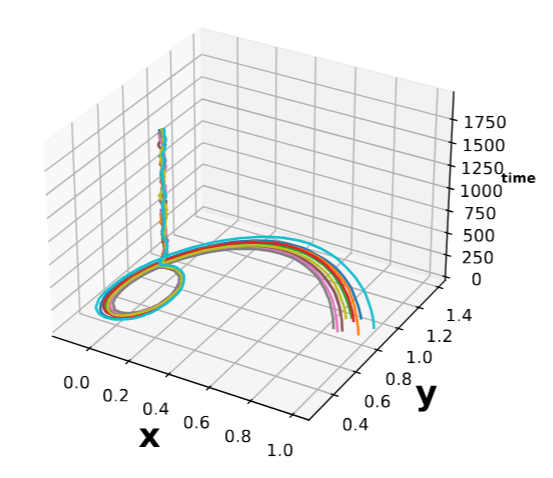

Posto: Probabilistic Safety Verification Tool for Complex Autonomous Systems
The rapid advancement of autonomy in modern systems has led to a surge in model complexity, making safety verification using traditional tools increasingly difficult. As systems increasingly rely on components such as deep neural networks (DNN), existing model-based verification and monitoring techniques struggle to scale.
Posto To address this challenge, we introduce Posto, a statistical monitoring tool for safety verification of complex autonomous systems, including those driven by DNN. Unlike traditional monitoring tools that depend on formal system models, Posto only requires the system’s input–output behavior (I/O Execution model) and the log, which may be noisy and incomplete. Using this information, Posto monitors the system against given safety properties, generating a concrete counterexample when unsafe behavior is observed or providing a probabilistic safety guarantee with a user-specified confidence level otherwise.
For a concise overview of the technical details of Posto, see the Overview slides.
Evaluation and Usage We provide easy-to-use scripts and comprehensive documentation that allow users to reproduce our experiments, monitor their own systems using logs, and extend the tool for their own applications.
Setup and Installation Detailed setup and installations steps are provided in the Posto Manual
Based On
Posto is based on the paper Probabilistic Safety Verification of Autonomous Systems: A Statistical Approach for Monitoring .
Authors:
Bineet Ghosh,
Étienne André
In: International Conference on Formal Techniques for Distributed Objects, Components, and Systems (FORTE), 2025.
📄 Read the paper (PDF) | 📑 BibTeX citation

Posto Architecture and Functionalities

Each block represents a core architectural component. Inputs are shown as hollow rectangles on the left, internal components as solid gray rectangles, and outputs as purple arrows on the right. Interactions between components are indicated by solid blue arrows.
Recreating Results Once the tool is downloaded and set up, the experimental results can be reproduced using the script provided in our GitHub repository, with detailed usage instructions available here.
Safety Verification
Posto verifies the safety of complex autonomous systems—including those with DNN components—using noisy and incomplete logs, providing high probabilistic guarantees. It reconstructs valid system trajectories to check safety, returning a concrete counterexample if any trajectory violates the specifications.
python3 posto.py checkSafety --log=logs/model1.lg \
--mode=equation --model_path=models/model1.json

Log Generation
Posto can also generate synthetic logs by sampling random system trajectories and adding user-defined noise and missing samples, allowing users to test robustness under different uncertainty conditions. It provides visualizations of these logs to help users intuitively understand system behavior.
python3 posto.py generateLog --log=logs/model1.lg \
--init="[[ -2.0, 2.0 ], [ -1.5, 1.5 ], [ -1.5, 1.5 ]]" \
--timestamp=3000 --mode=equation \
--model_path=models/model1.json \
--prob=7 --dtlog=0.05

Behavior Generation
Posto can generate and visualize random system behaviors under uncertainty, offering diagnostic insights into how the system evolves from different initial conditions. Though separate from the safety verification pipeline, this helps users explore possible executions and assess the system’s robustness.
python3 posto.py behavior --log=logs/model1.lg
--init="[[-1.667370, -1.467370],
[0.531417, 0.731417], [-1.678000, -1.478000]]"
--timestamp=1000 --mode=equation
--model_path=models/model1.json

A complete list of commands and configuration options is available in the Posto Manual.